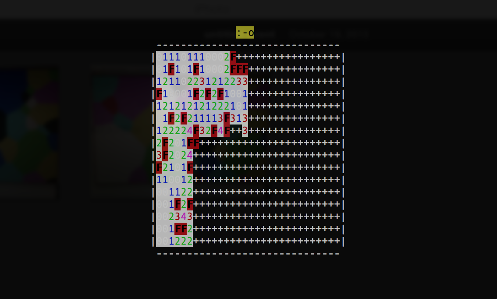
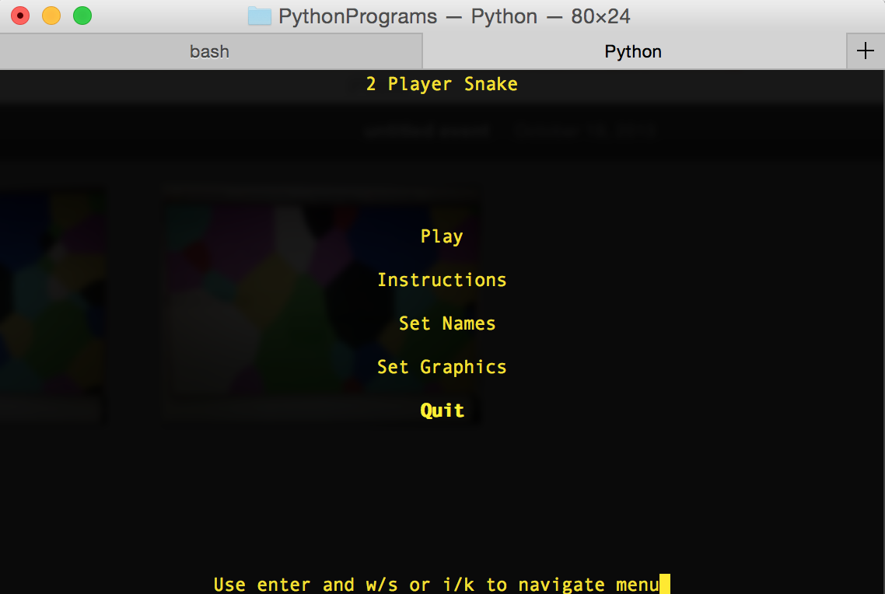
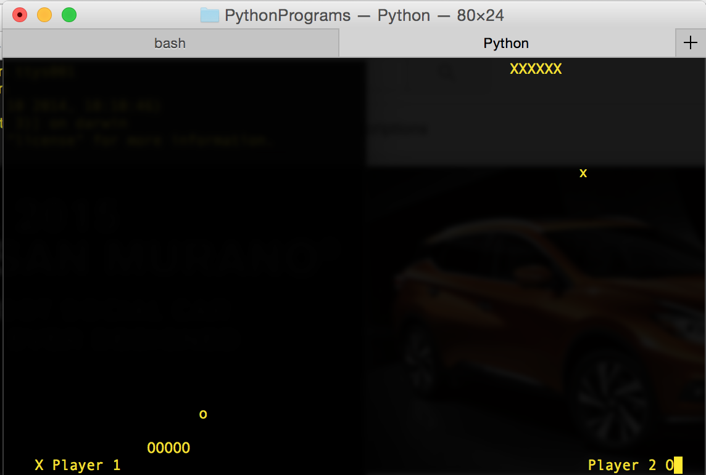

I started with python. Project Euler is a great website that helped me develop these skills.
Here's my friend key:
388978_47acdf4eef38c36764df516d4e2e74c2

When I first used python, 99% of what I learned came from YouTube videos. Eventually I got tired of writing programs limited to console printing. I searched the internet and discovered python's curses module. The curses module can turn your Unix terminal into a text-based GUI, and let me make really old style games like 2-Player Snake and Minesweeper, seen below.
  Eventually, I wanted to give back to the YouTube programming tutorials that have taught me so much, and no YouTube tutorials existed for teaching python's curses module, so I made the channel Python Curses Tutorial to give anyone else on the internet a place to start with curses.